Montpellier JUG
BIENVENUE
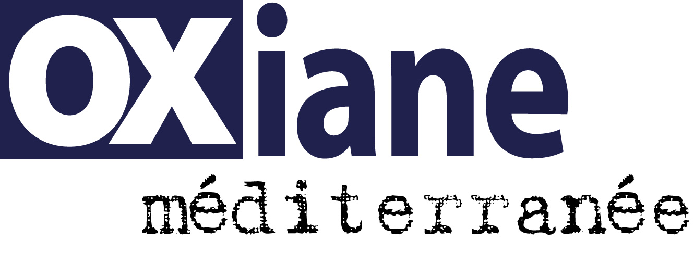
Evènement de ce soir
Java Bilan et perspectives
- Merci à NOVAE pour l'organisation de cet évènement
- Objectif : Faire un tour du propriétaire concernant Java
Orateur
Arnaud Castelltort
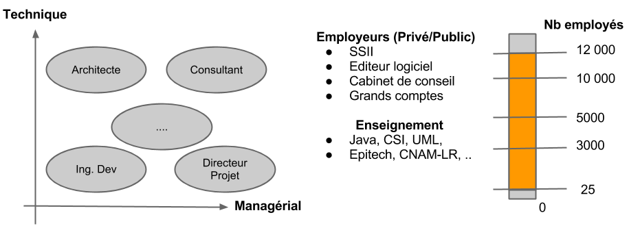Vous avez dit JUG ?
Java User Group
- Communauté indépendante
- Autour du thème "Java"
- Groupes reconnus et aidés par SUN Oracle et d'autres éditeurs (Atlassian, O'Reily, ...)
Etat d'esprit
Dans un état d'esprit professionnel sur le fond et convivial sur la forme
Evènements
Le Jug chaque 3eme mercredi du mois
- 15ene évènements
- ~30 sujets traités
- + de 30 intervenants
- De 40 à 80 auditeurs en moyenne
- Une fois par mois
- Inscription et évènement gratuit
- Lieu : Polytech'Montpellier
Exemple Evènement
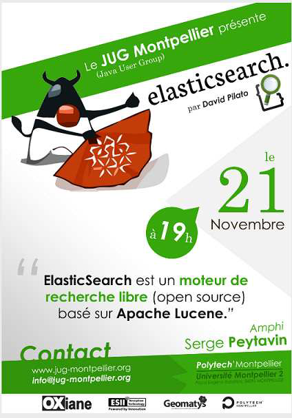Les Evènements
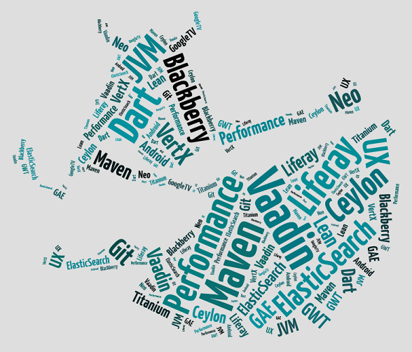Nous contacter
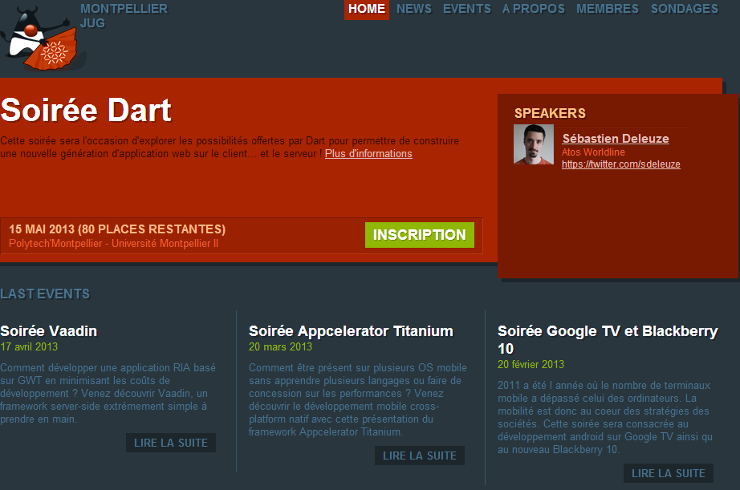- Site internet : http://www.jug-montpellier.org
- Tweeter : @montpellierjug
- Google Group : jug-montpellier
JUG Need You!
Java
Bilan et perspectives
Arnaud Castelltort - @a_castelltort
Le sommaire
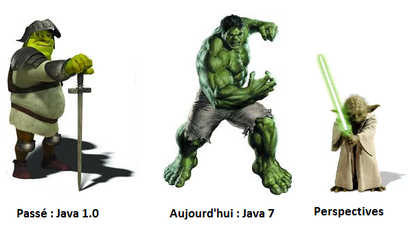Avant propos
Tout ce qui suit dans cette présentation est mon opinion personnelle.
Celui qui dit détenir la vérité est un fou ou un dictateur
Nous ne sommes pas sencé savoir ce que tous les autres ignorentMicrosoft
Java : pourquoi ?
Qu'est ce que Java ?
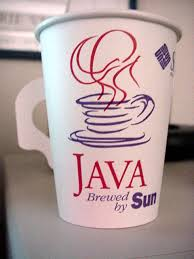
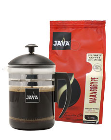
Java : pourquoi ?
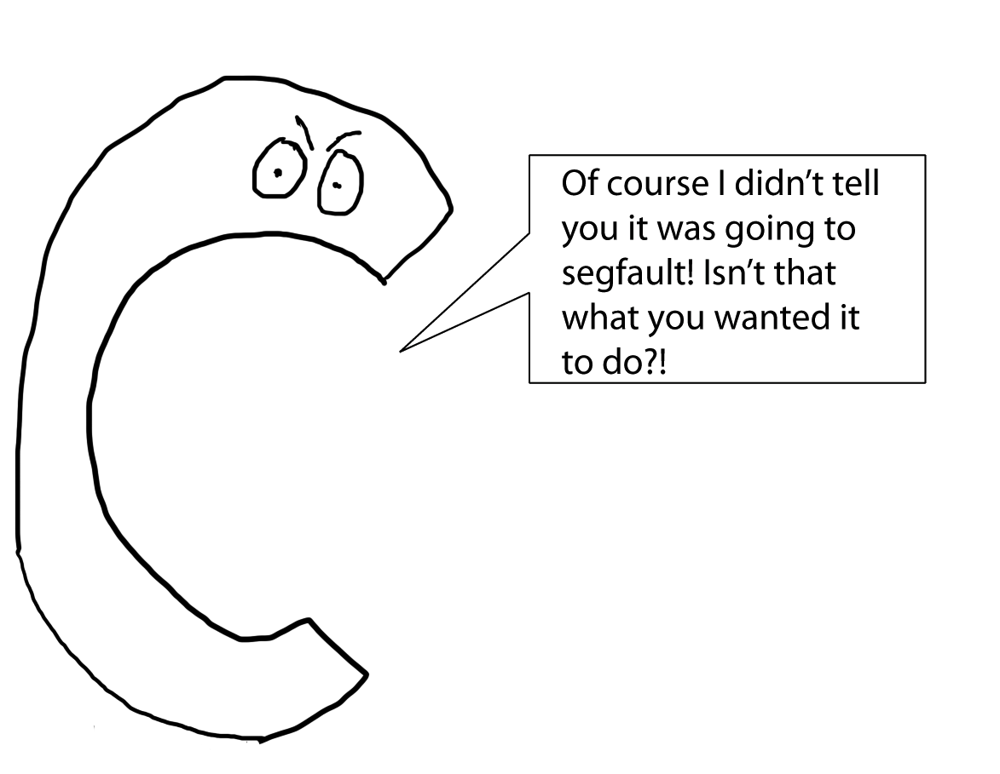Java : pourquoi ?
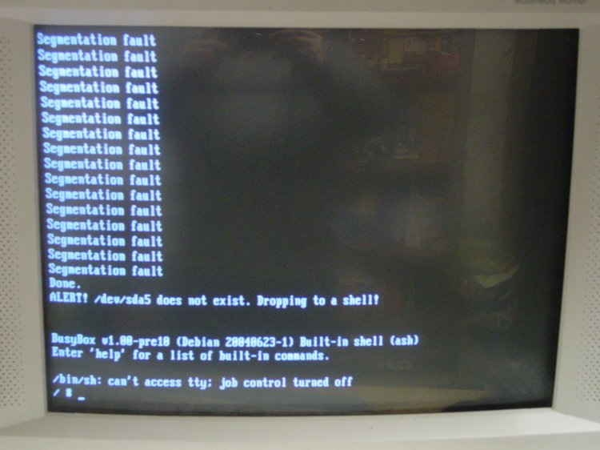Java : pourquoi ?
Write once, run anywhere!
- Langage fortement typé
- Gestion de la mémoire simplifiée
- Gestion des exceptions
- Multitâche
- Sécurisé (hmm.. un jour oui.. un jour non)
- Bibliothèque très riche
- Exécutable portable
- Gratuit
- Forte communauté
- ...
Terminologie Java
- Java Virual Machine (JVM) Une architecture machine abstraite respectant les spécifications java
- Java Runtime Environment (JRE) Un environement d'exécution qui implémente une JVM et fournit tous les composants (class, librairies, ...) nécessaires à l'exécution des programmes Java
- Java Development Kit les outils basiques nécessaires à la compilation, la documentaion et à l'assemblage des programmes (javac, javadoc, jar, ..). Le JDK inclut la JRE
Les plateformes Java

Java 1.0 -> Java 6

Communauté Java
- Java Communiy Process (JCP) processus formalisé permettant aux acteurs intéressés de participer à la définition des nouvelles versions et évolutions de la plateforme
- Java Specification Request (JSR) le document formel de description d'une spécification et/ou technologie
- Java & Open Source En mai 2007, Sun rend libre sous licence GNU GPL la plupart des technologies Java.
Java Frameworks
- Outils de tests : junit, testng, ...
- GUIs : AWT, Swing, ...
- IDEs : Netbeans, Eclipse, IntelliJ IDEA
- Build Systems : Ant, Maven, Gradle
- Persistence : Hibernate, Ibatis, ...
- Charting & Reporting : Jasper, JFreeChart, ...
Java 7
- Sortie en 2011
- Fonctionnalités : "What's ready"
- Principales fonctionnalités
- Langage : Project Coin (JSR-334)
- Librairies :
- NIO2 (JSR-203)
- Fork Join framework,
ParallelArray (JSR-166y)
- InvokeDynamic bytecode (JSR-292)
- ...
Attention : plus de support Java 6!!
Project Coin : synopsis
Ensemble de sugestions faites par la communauté et implémentées dans Java 7.
- String support on Switch case
- multi-catch and precise re-throw
- Autocloseable
- Binary literals && underscores in numeric literals
- Diamond operator
- ...
Project Coin : String Switch case
public int NbrDay(String s, int year) {
switch(s) {
case "April": case "June":
case "September": case "November":
return 30;
case "January": case "March": case "May":
case "July": case "August": case "December":
return 31;
case "February":
//...
default:
//...
}
} Project Coin : Precise Rethrow
// pre Java 7 "imprecise rethrow"
// must use "throws Exception"
public static void imprecise() throws Exception {
try {
// Code that may throw either
// FirstException or SecondException
} catch (Exception e) {
throw e;
}
}
Project Coin : Precise Rethrow
// Java 7 precise rethrow.
// No longer "throws Exception"
public static void precise() throws FirstException, SecondException {
try {
// Code that may throw either
// FirstException or SecondException
} catch (Exception e) {
throw e;
}
}
Project Coin : Multi-catch
//...
catch (IOException ex) {
logger.log(ex);
throw ex;
} catch (SQLException ex) {
logger.log(ex);
throw ex;
}
Project Coin : Multi-catch
try {
...
} catch (SpecificException ex) {
// Do something very specific!
throw ex;
} catch (AnException | MyException | ZeException ex) {
// Do something more generic...
throw ex;
}
Project Coin : AutoCloseable
try (InputStream in = new FileInputStream(src);
OutputStream out = new FileOutputStream(dest))
{
byte[] buf = new byte[8192];
int n;
while (n = in.read(buf)) >= 0)
out.write(buf, 0, n);
}
Interface java.lang.AutoCloseable (void close())
Project Coin : Binary literals
Qu'est ce qu'un litéral ? Une valeur constante dans un programme : entier, flotant, caractère, booléen, string, hexa, ..
int mask = 0b101010101010;
Project Coin : Underscore numeric literals
int mask = 0b1010_1010_1010;
long big = 9_223_783_036_967_937L;
long creditCardNumber = 1234_5678_9012_3456L;
long socialSecurityNumber = 999_99_9999L;
long siret = 123_456_789_00031;
float pi = 3.14_16F;
long hexBytes = 0xFF_EC_DE_5E;
long hexWords = 0xCAFE_BFFE;
Project Coin : Diamond <>
Map<Ville,List<Client>> map = new HashMap<Ville,List<Client>>();
Map<Ville,List<Client>> map = new HashMap<>();
Map<Dep,Map<Ville,List<Client>>> map = new HashMap<Dep,Map<Ville,List<Client>>>();
Map<Dep,Map<Ville,List<Client>>> map = new HashMap<>();
Map<Pays,Map<Dep,Map<Ville,List<Client>>>> map = new HashMap<Pays,Map<Dep,Map<Ville,List<Client>>>>();
Map<Pays,Map<Dep,Map<Ville,List<Client>>>> map = new HashMap<>();
NIO2
- Modèle unifié pour tous les systèmes de fichiers
- Le parcours d'arbres de fichiers (visite)
- Support des opérations basique sur les fichiers(copier, supprimer, déplacer)
- Support des liens symboliques
- Notification de changements sur le Système de fichier
- SPI pour supporter des nouveaux systèmes de fichiers (ServiceProvider)
- Travail asynchrone sur des fichiers et sockets
- ...
NIO2 : La nouvelle API
Les principales classes (java.nio.file) :
- Path : chemin d'accès vers une ressource
- Files : classe utilitaire contenant des méthodes (static) d'opérations sur les fichiers et chemins d'accès
- FileSystem : classe représentant un FS, utilisait pour obtenir les chemins de fichiers
- FileSystems : classe utilitaire permettant d'obtenir l'accès à un FS
- FileSystems.getDefault() : obtient un accès à tous les fichiers accessibles par la JVM
NIO2 : Files
- Read/Write, Copy & Delete
- Create Files, Directories & Links
- Use of system "temp" directory
- Attributes - Modified/Owner/Permissions/Size
- Déterminer le type de contenu
- Déterminer le type de fichier (isExecutable, isSymLink
- ...
NIO2 : Parcours de fichiers
Path p1 = Paths.get("/tmp/foo");
Path p2 = Paths.get(URI.create("file:///Users/joe/FileTest.java"));
Path p3 = Paths.get(System.getProperty("user.home"),"logs", "foo.log");
Path p4 = Paths.get("/home/joe/foo");
Path p5 = ("c:\\data\\test.dta");
Path p6 = Paths.get("Test.java").toAbsolutePath();
Path fileName = listing.geFileName();
Path parent = p2.getParent();
Path root = p2.getRoot();
Path subRep = p2.subPath(0,2);
File file = aPathPath.toFile(); // ‘legacy’ java.io.File
NIO2 : Liens symboliques
// Path and Files are “link aware”
Path newLink = Paths.get(...);
Path existingFile = Paths.get(...);
try {
Files.createLink(newLink, existingFile);
} catch (IOException x) {
System.err.println(x);
} catch (UnsupportedOperationException x) {
//Some file systems or some configurations
//may not support links
System.err.println(x);
}
NIO2 : Walktree
interface FileVisitor
preVisitDirectory(T dir, BasicFileAttributes attrs);
visitFile(T dir, BasicFileAttributes attrs);
visitFileFailed(T dir, IOException exc);
postVisitDirectory(T dir, IOException exc);
public static class PrintFiles extends SimpleFileVisitor {
@Override
public FileVisitResult visitFile(Path file, BasicFileAttributes attr) {
if (attr.attr.isRegularFile()) {
System.out.format("Regular file: %s ", file);
} else if {
System.out.format("Not a regular file: %s ", file);
}
return CONTINUE;
}
}
Fork Join Framework
if (my portion of the work is small enough){
do the work directly
}else{
split my work into two pieces
invoke the two pieces
}
Fork Join Framework - Pool
ForkJoinPool - Service for running ForkJoinTasks
aFjp.execute(aTask); // async
aFjp.invoke(aTask); // wait
aFjp.submit(aTask); // async + future
ForkJoinPool(); // default to platform
ForkJoinPool(int n); // # concurrent threads
ForJoinPool(n,aThreadFactory,exHandler,FIFOtasks); // Create your
// own thread handler, exception handler, and boolean
// on task ordering (default LIFO)
Fork Join Framework - Tasks
ForkJoinTask - The abstract base class for:- RecursiveAction
- A recursive resultless task
- Implements compute() abstract method
- RecursiveTask - Similar to RecursiveAction but returns a result
ForkJoinPool p = new ForkJoinPool();
MyTask mt = new MyTask(n); // implements compute
p.submit(mt);
while (!mt.isDone()) {/*THUMPER!*/ }
System.out.println(mt.get());
Fork Join Framework - Compute()
- RecursiveAction - ex. increment an entire array
protected void compute(int lo, int hi) {
if (hi - lo < THRESHOLD) {
for (int i = lo; i < hi; ++i) array[i]++;
} else {
int mid = (lo + hi) >>> 1;
invokeAll(new IncrementTask(array, lo, mid),
new IncrementTask(array, mid, hi));
}
}
protected Integer compute(int n) {
if (n <= 1) { return n; }
Fibonacci f1 = new Fibonacci(n - 1);
Fibonacci f2 = new Fibonacci(n - 2);
f1.fork(); f2.fork();
return f2.join() + f1.join();
}
InvokeDynamic
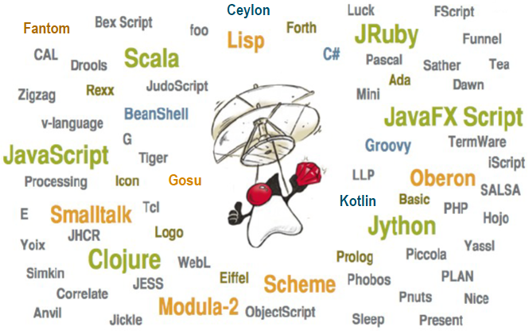Perspectives
Evolution des technologies et systèmes d'informations
Le monde change...
Les systèmes d'informations se transmutent vers le web...(WOA, HATEOAS, REST, SAS, ...)
Le premier moyen de consultation d'internet sera bientôt le smartphone
(ResponsiveDesign, Mobile First, ...)
Cette présentation n'est pas un PowertPoint.. c'est une page web
(Inovation, Nouveaux usages, UX, ...)
On construit le futur avec des technologies anciennes devenues matures ?
...il pose de nouvelles problématiques...
- L'utilisateur devient expert
- L'information est distribuée
- La quantité de données augmente
- ...
L'adoption des technologies ? (langages)
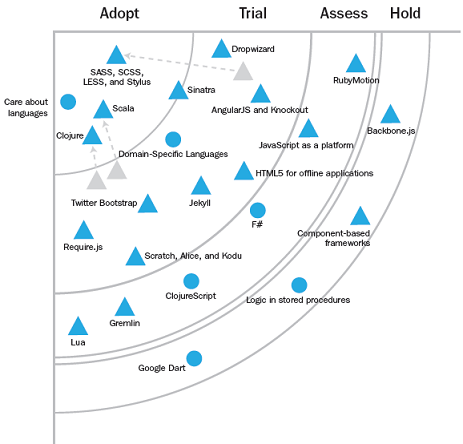L'adoption des technologies ?(plateformes)
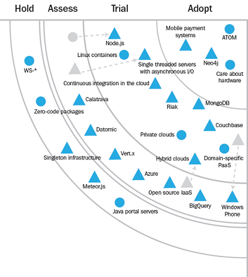...les tendances actuelles
- Mobile : Modification des stratégies et des produits
- Décisionnel : BigData != Big Budgets => utilisation de technologie open source et d'infrastructues cloud
- Simplification des architectures : Tous le monde le souhaite, mais plus facile à dire qu'à faire
- Persistence : NoSQL
Perspectives : Java
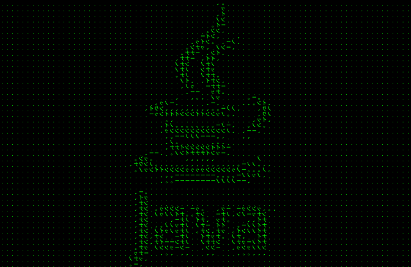Java 8
Jigsaw- Lambda
- JavaFX 3
- Complete Oracle JVM
- Convergence
- Javascript Interop
- ...
Pour plus d'informations :

Java / Scala
// Java 1.8
List<Students> stds = Arrays.asList(s1, s2, sn);
double highestScore = stds.filter(Student s -> s.getCountry() == FR)
.map(Student s -> s.getScore())!
.max();
//Scala
val students = List(s1, s2, sn)
val highestScore = students.filter(s:Student => s.country == FR)
.map(s:Student => s.score)
.max
Java 9 et au delà..
- Interopérabilité
- JVM Multi-langages
- Améliorer l'intégration Java/code natif
- Cloud
- Gestion des ressources
- Multi-tenancy support?
- Facilité d'utilisation
- Self-tuning JVM
- Amélioration du langage
- Optimisations avancées
- Sytème de type unifié
- Optimisation des structures de données
- "Works Everywhere and with Everything"
- Réduire pour être embarqué massivement dans les serveurs
- Supporter des modèles de calcul hétérogènes
Java 8 : Lambda
slides complémentaires (s'il reste du temps)
Java 8 : Lambda
Le fonctionnel, concept nouveau en java ?
jdbcTemplate.queryForObject("select * from student where id = ?",
new Object[]{1212l},
new RowMapper() {
public Object mapRow(ResultSet rs, int rowNum) throws SQLException {
return new Student(rs.getString("name"), rs.getInt("age"));
}
});
File[] photoFiles = new File("/pics").listFiles(new FilenameFilter() {
public boolean accept(File file, String fileName) {
return fileName.endsWith(".jpg");
}
});
Java Lambda : ça ressemble à quoi ?
// pre Java 1.8
new File(“/").listFiles(new FileFilter() {
public boolean accept(File f) {
return f.isDirectory();
}
});
// Java 1.8
new File(“/").listFiles((File f) -> f.isDirectory());
Java / Scala
// Java 1.8
List<Students> stds = Arrays.asList(s1, s2, sn);
double highestScore = stds.filter(Student s -> s.getCountry() == FR)
.map(Student s -> s.getScore())!
.max();
//Scala
val students = List(s1, s2, sn)
val highestScore = students.filter(s:Student => s.country == FR)
.map(s:Student => s.score)
.max
Conclusion
Aspirine ou café ? Communauté, Perennité, Innovation, Pragmatisme
Communauté, Perennité, Innovation, Pragmatisme
Sources et articles connexes
- http://www.oracle.com
- http://www.infoq.com
- @delabassee - Devoxx France 2012
- Urs Peter - nl.Jug Oct 2012
- Joshua Bloch - Devoxx
- Rémi Forax - invokedynamic
- Steven G. Harris - Devoxx
- @gtardif - Devoxx France 2012
- Klaus Kreft & Angelika Langer - Lambdas in Java 8
- ThoughtWorks - Technology radar Oct. 2012
- SimonRitter - QConLondon2012
- ... and more...